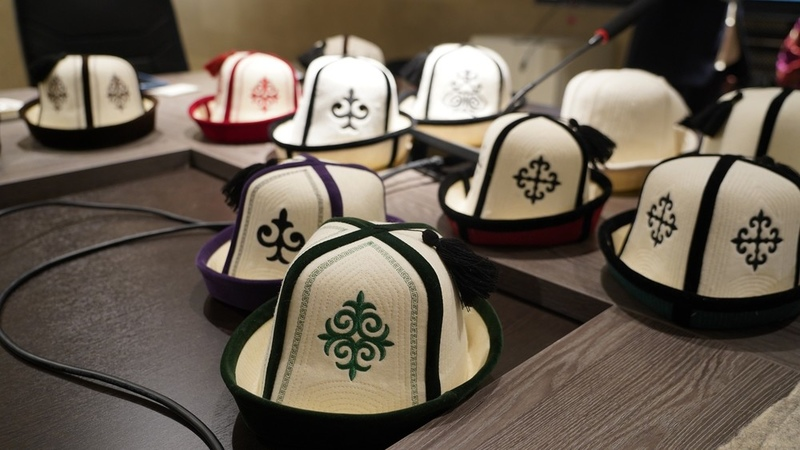
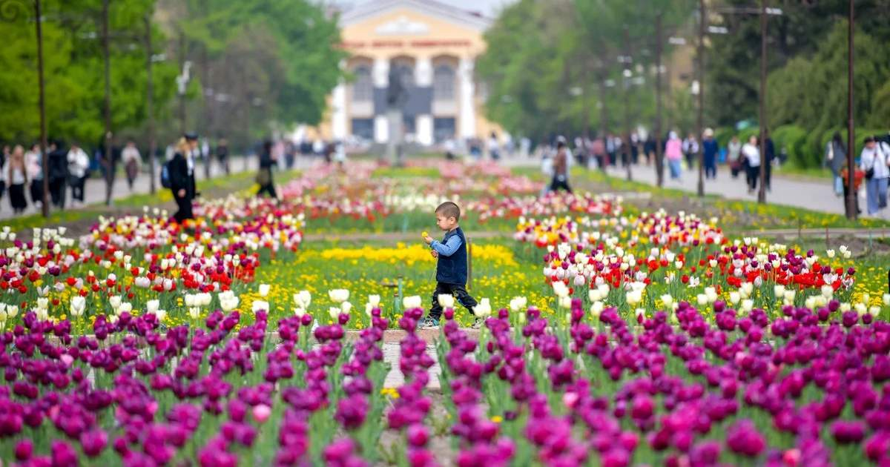
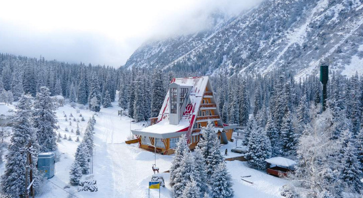

Yurts & Harmony
The round yurt (boz üy) is a symbol of family, hearth, and living in balance with nature. Its crown is on the national flag.

The Felt Kalpak
The white felt kalpak has four peaks representing the Tian Shan mountains. It is worn with pride as an emblem of dignity.
Warm Welcome
Guests are welcomed like family. Fresh hot bread, tea, communal meals, and music on the komuz bring people together.

Spring
Warming days, blossoms, greener parks.
City comes to life with blooming trees and outdoor events.
Summer
Warm weather, city exploration, mountain excursions.
Warm sunny days perfect for heading into cool mountain gorges.Autumn
Cooler air, colourful foliage, comfortable sightseeing.
Golden trees across Oak Park and crisp, clear mountain views.
Winter
Cold weather, possible snow, a different view of city and mountains.
Snow-capped peaks and cozy hot tea in welcoming cafés.